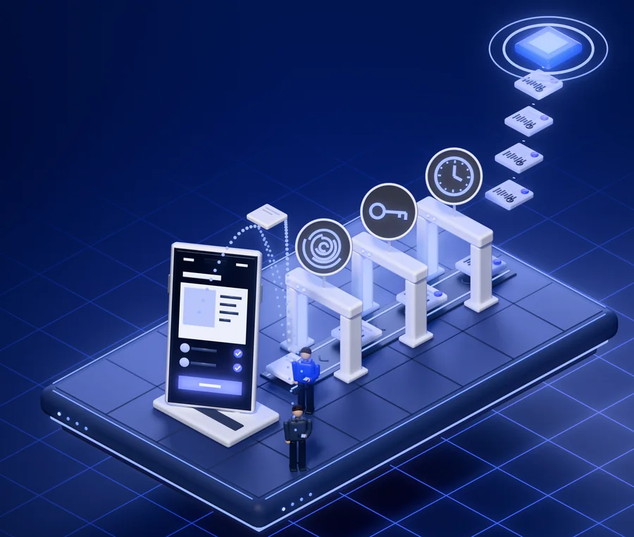
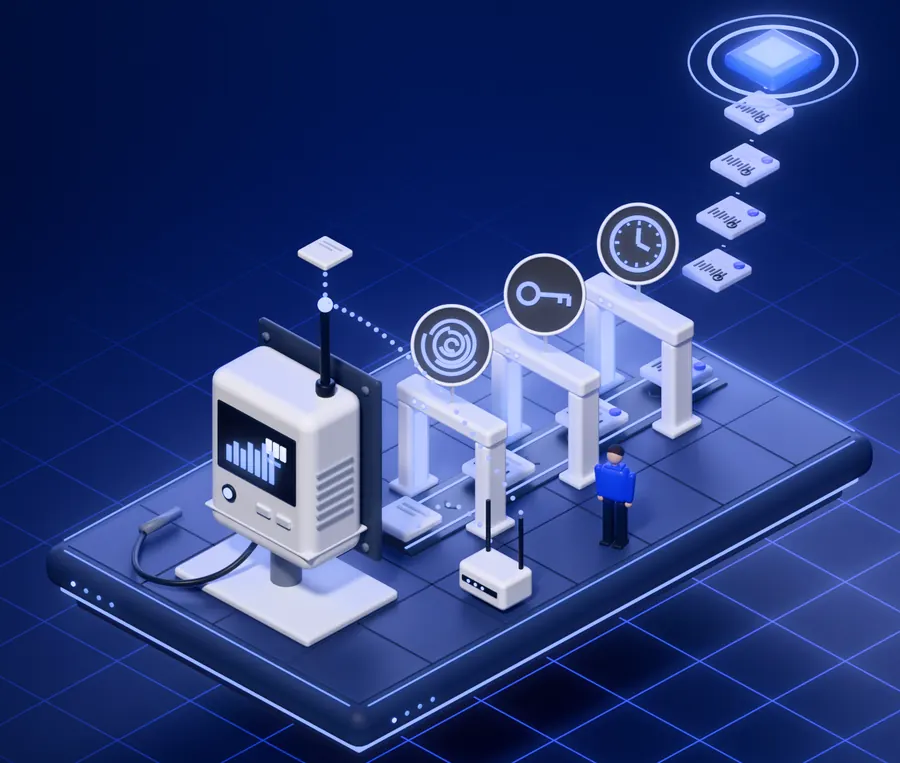
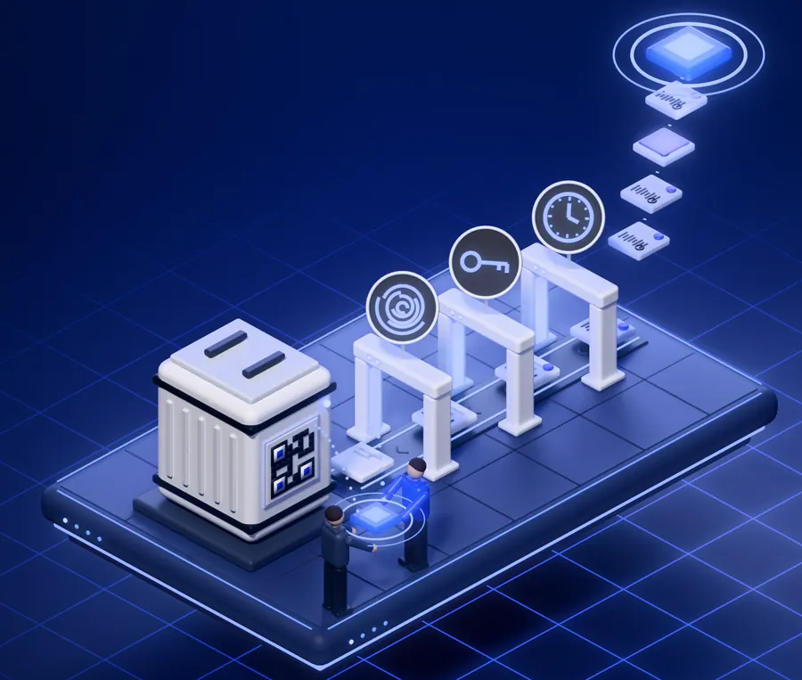
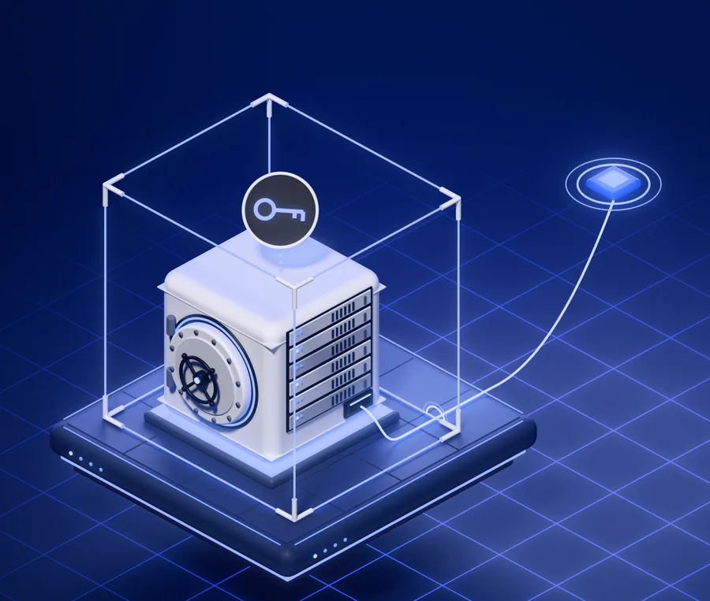
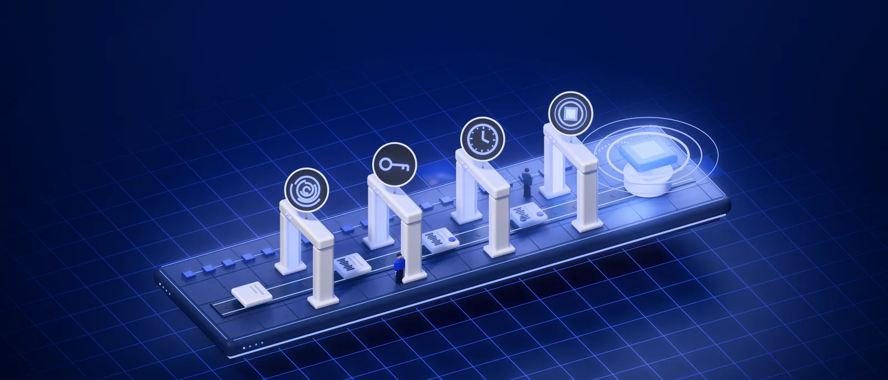
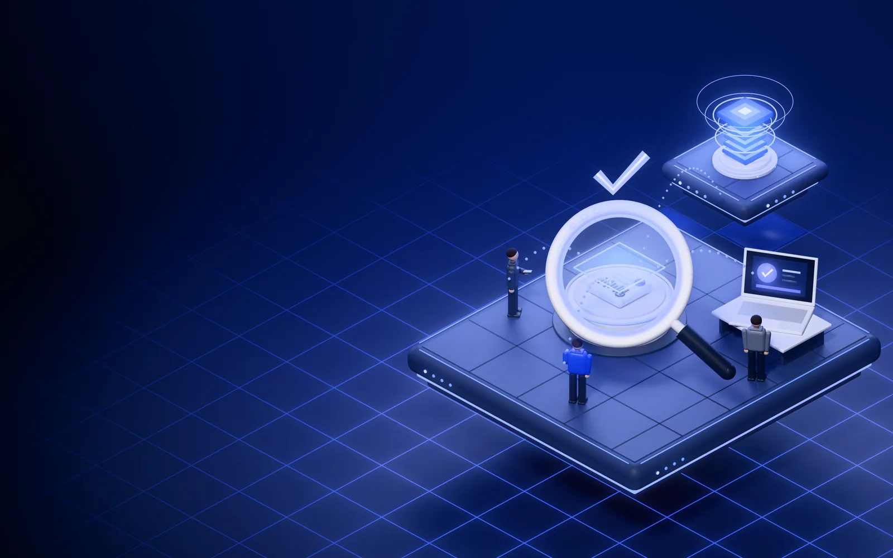
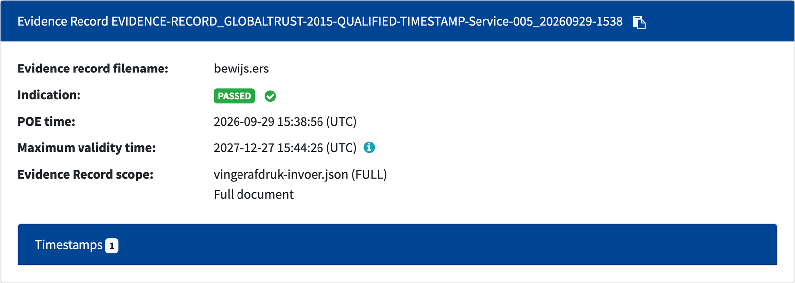
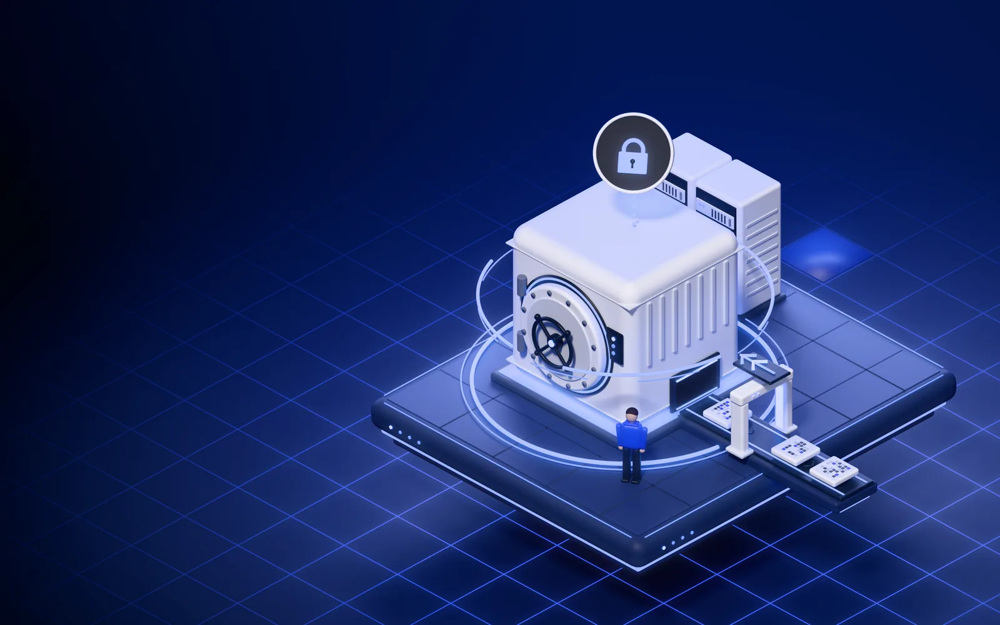

One proof layer·four product lines·servers in the EU
The anchoring layer for your data.
What your people, devices and systems record, Vidimus anchors outside your system within five minutes, so that every party can check for itself that it remained unchanged.
- SHA-256
- Ed25519
- RFC 3161
- eIDAS per group
- Bitcoin
- EU
The first 100 records a month free, no payment details needed. Or first try to forge a consignment note yourself

Four product lines, one proof.
Whether a person, a device or a system supplies the record, it gets the same fingerprint, signature, timestamp and anchor.
-

LiveVidimus App
Deliveries, damage, handovers and inspections on the spot, signed by both parties.
- photo · location · signature
- iPhone · Android · web app
- anchored within five minutes
From €0 · 100 records a month free
-

LiveVidimus Sensor
Loggers, meters and weighbridges send their measurements; each measurement is anchored separately.
- HTTPS · REST API · JSON
- one key per measurement source
- unlimited measurements
€15 per device per month · the first one free
-
Live
Vidimus Data
Cybersecurity for your data: snapshots of databases and folders, and web pages as they were online.
- fingerprints computed on your side
- database · folder · web page
- automatically every night: in development
From €49 a month · first series free for 30 days
-

LiveVidimus Product Passport
The line of an object: a code with a QR label, events and handovers, signed by holder and recipient. Not an official EU product passport.
- code and QR label on the object
- holder and recipient sign
- receiving and checking: free
10 objects a year free · receiving always free

Vidimus for softwareAre you building a TMS, WMS or ERP?Deliver proof in your own product through the partner API: referral, reseller or integrator.Become a partnerIncluded with every record, in every line
- Public check pagefor your counterparty, without an account
- Evidence bundlea zip with content, signatures and timestamps
- Recomputable without Vidimuswith verify_bundle.py, openssl or EU DSS
- Servers in the EUHetzner, Nuremberg, encrypted per organisation

How the proof works. Four gates, for every record.
You do not have to take our word for it: every step can be recomputed with ordinary software, even without Vidimus.
-
01 · fingerprint
SHA-256
A fingerprint of the content and of every attachment. Not encryption: one character different gives a different fingerprint.
64 characters · per record · immediately -
02 · signature
Ed25519
Signed with the key of the device or of your system. If the recipient co-signs, they do so with their own key on their own phone.
key per device · per system -
03 · timestamp
RFC 3161 + eIDAS
Every five minutes one Merkle root, timestamped by Sectigo. For customer organisations, also qualified per group by GLOBALTRUST, usually within six hours.
within 5 min · eIDAS per group -
04 · anchor
Bitcoin
Every root goes to Bitcoin via OpenTimestamps and is in a block within a few hours: a public second witness outside Vidimus.
opentimestamps · .ots in the bundle
Recompute withopenssl tsEU DSSots verifyverify_bundle.pyOne record from start to proof
See for yourself. Without an account.
Every record has a public check page. This one is real: a demo record from Vidimus itself, a delivery of 18 pallets of frozen goods.
unchanged
8 of 8 checks match
- Contentsha-256 · fingerprintmatches
- In the anchored groupMerkle path to the rootmatches
- Source signatureEd25519 · system keymatches
- Vidimus signatureEd25519 · on the bundlematches
- Ledgerhash chain · entry 105matches
- TimestampSectigo · RFC 3161 · 17:38:38 (UTC+2)matches
- Qualified timestampGLOBALTRUST · eIDAS · 17:38:56 (UTC+2)matches
- BitcoinOpenTimestamps · in a blockmatches
Three ways to check
- In the browserThe check page recomputes it. No account, no app.
app.vidimus.be/v/{record} - With the evidence bundleA zip with content, signatures, Merkle path and timestamps, plus a small script.
python3 verify_bundle.py bundel.zip - With EU DSSThe European Commission's software reads the Evidence Record.
bewijs.ers · PASSED
Try to forge it.
Change the number of pallets on this fictional consignment note and see what happens to the proof. Everything is computed live in your browser.
Delivery — CMR
Kaai 913, Antwerp · signed by driver and recipient, each on their own device
- Sender
- Verhelst Transport BV
- Recipient
- Nova Logistics NV
- Packages
- 26 pallets · without reservation
- Delivered
- 4 September 2026, 15:12 (UTC+2)
- Location · device
- 51.2302 N · 4.4160 E · ±6 m
or change a value yourself, as someone might edit a copy, export or PDF weeks later
Example · fictional record
unchanged
This is exactly what was recorded on 4 September at 15:13 (UTC+2), signed by both driver and recipient.
- Recorded
- 4 September 2026 · 15:13:22 (UTC+2)
- Timestamp
- from an external service, within five minutes · for customer organisations also qualified per group (GLOBALTRUST), usually within 6 hours
- Anchor
computing…- Current content
computing…
THE CHECKS6 of 6 checks match+
anchor … · now …matchesThe sha-256 over the five fields is exactly the fingerprint in the anchor. The same bytes give the same 64 characters; finding different content with the same fingerprint is practically impossible with SHA-256.
The five fields now give a different fingerprint from the anchor. One character of difference, 26 → 23, and the whole hash changes. Which field? See above in blue: {velden}.
key 7f3a·91c2·e04b · signature 4b8e…0d17matchesThe Ed25519 signature matches the fingerprint and the key on the driver's device. That key is created on the device and never leaves it.
The signature belongs to the original fingerprint, not to this content. Whoever changes the text has no signature from the driver over the new text.
key c2d9·5a10·3be7 · signature 9a04…77bematchesThe recipient also signed the same fingerprint, with their own key on their own device. Two parties, one content.
The recipient signed the original content. Nobody signed this changed version.
timestamp no. 5D2C 9A41 7E03 · 2026-09-04T13:13:22ZmatchesAn external timestamping service signed the root of the group on 4 September 2026, 15:13:22 (UTC+2). Because the group contains records of a customer organisation, a qualified timestamp from GLOBALTRUST (eIDAS) was later added as well, with its own, later time, usually within six hours; this record is connected to it through its Merkle path. Nobody can move that moment earlier, not even Vidimus.
The timestamp applies to the root that contains the original fingerprint. No timestamp exists for this content.
group 2026-09-04T13:10Z · 128 records · root 9e41…a7c3 · path 7 stepsmatchesRecomputing the Merkle path shows that this fingerprint is in the anchored root. That only works with exactly this fingerprint.
With a different fingerprint, the Merkle path no longer leads to the root. So the content is not in the anchored group.
entry 48,213 · previous entry 2c7f…e01amatchesThe root is in the ledger and each entry hashes the previous one. Changing one entry shows in every entry after it.
The ledger only knows the original root. This content appears nowhere in the chain.
Unchanged or Changed: that is all Vidimus says, not what changed and not by whom. Vidimus does not judge, it compares. Who is right is for the court to decide.


European check. With the Commission's software.
For customer organisations, each group of records gets a qualified timestamp from GLOBALTRUST (eIDAS); your record is connected to it through its Merkle path. In DSS, the Evidence Record of our demo record gives PASSED.
- Timestamp
- GLOBALTRUST · qualified (eIDAS) · per group, for customer organisations
- Trusted list
- status granted on the EU list, set by the Austrian supervisory body
- EU DSS
- Evidence Record (RFC 4998) · PASSED
- Check it yourself
- bewijs.ers vingerafdruk-invoer.json
A technical check, not an approval or certification of Vidimus. The online DSS is a Commission demo environment.

Encrypted, locked, in the EU.
What is stated here is live. What we do not have yet is stated honestly on the Security page.
- AES-256-GCM
- Encrypted per documentEvery document and every photo with its own key, wrapped under your organisation's key.
- WORM · Object Lock
- Compliance modeDuring the retention period, the storage allows no deletion or overwriting, not even at the request of Vidimus.
- EU · Nuremberg
- Servers at HetznerContent stays in the EU. Only fingerprints go to the timestamping services.
- Confidential
- Only you have the keyIn a confidential logbook, the device encrypts everything before sending.
- Access
- Two-step verificationTwelve-hour sessions and a separate key per system, revocable at any time.
- Backup
- Every night, thirty daysEncrypted to storage with Object Lock. We test the recovery every quarter.
One proof for everything you record.
A delivery or a web page: to Vidimus it is a record, with the same recording and the same check. Six examples.
- Delivery26 pallets, signed by driver and recipient.
9e41…a7c3unchanged - Damage photoThe dent, photographed at the return, with location and time.
4b8e…0d17unchanged - DocumentA signed document, exactly as it was that day.
c2d9…5a10unchanged - Web pageTerms and price as they were online at 14:02 (UTC+2).
7f3a…e04bunchanged - MeasurementThe temperature in the cold store, as the sensor sent it.
2c7f…e01aunchanged - DatabaseThe state of your order table at midnight, as a fingerprint.
5d2c…9a41unchanged
The first 100 a month: free.
After that, you pay per record, and the more you record, the cheaper it gets. Receiving and checking cost your counterparty nothing.
- Record
- from €0.08cheaper per tier, down to €0.003
- Sensor or logger
- €15per device per month, the first one free, unlimited measurements
- Minimum
- €19a month, only once you pay anything
Prices excl. VAT.
Tiers, annual contract and sample invoices€32a month, excl. VAT
500 records, the first 100 free: €32
Start freeAn estimate with the same calculation as the invoice. Nothing is sent.
For software, and for agents.
Are you building a TMS, WMS or ERP? Deliver proof in your own product through the partner API. Each system gets its own key, revocable at any time.
REST · JSONOpenAPI at app.vidimus.be/openapi.jsonMCPa hosted MCP server at app.vidimus.be/mcp, with your system's key/verifypublic check of a record, without a key
$ curl https://app.vidimus.be/verify/reg_18838643120d
"checks": {
"hash": true, "merkle": true,
"signature": true, "platform_signature": true,
"ledger": true, "tsa": true,
"qualified_tsa": true, "bitcoin": true
}What you want to know.
The objections we hear most often, answered briefly and honestly.
All questionsDoes a court accept this?
The court weighs all evidence freely. Your record is connected to the root of its group through hash computations you can recompute yourself (Merkle path, Evidence Record). If that group contains records of a customer organisation, that root carries a qualified timestamp from GLOBALTRUST. For that timestamp, the presumption that date and time are accurate applies throughout the EU (eIDAS, Art. 41(2)); the record therefore existed no later than that time. Whether the presumption also applies to this record is for the court to assess. Vidimus shows what was recorded; who is right is for the court to decide.
Is a fingerprint the same as encryption?
No. SHA-256 turns the content into a fingerprint of 64 characters that belongs to exactly that content: whoever has the content can recompute it, and one character different gives a different fingerprint. Encryption is something else: your documents and photos are stored encrypted with AES-256-GCM, with a separate key per document.
What if Vidimus stops?
If Vidimus stops voluntarily, we announce it at least ninety days in advance and you can take everything with you during that period; in a bankruptcy, the bankruptcy trustee decides. Your bundles remain verifiable: you can check every evidence bundle without Vidimus, with a small script or with the European Commission's software.
Can Vidimus read my data?
In a regular logbook, everything is stored encrypted on servers in the EU, with a separate key per organisation. Our server opens your content only when the service needs it, such as to display, search or create an evidence bundle, and every opening appears in your access log. Do you want Vidimus to be technically unable to read anything as well? Choose a confidential logbook: the phone or your system encrypts everything before sending and only you have the key. Vidimus then sees the fingerprint and a short envelope (type, reference, source and time), not the content. You do not need to install anything; you keep one recovery file.
Do I have to replace my software?
No. Your TMS, WMS or ERP remains the source. Vidimus records and anchors the records that matter, through the app or an integration with the API. That integration is built by your vendor or your own IT, with a separate key per system.
What counts as one record?
One recorded moment: a delivery, photo, inspection or document. Ten photos of the same delivery, with the signature, together make one record. Measurements from a sensor do not count separately.
The founder
"We put our name and face to what we build. You do not call a support desk — you call the person who built it."
And if we are not there? Your bundles remain verifiable: every bundle can be checked without Vidimus, and backups go encrypted every night to storage with Object Lock. A reply within one working day is standard; an SLA with fixed response times is possible with an annual contract.
Every start followed up personally, from the first integration to the first anchor
Start today. The first 100 records a month are free.
No payment details needed. A director identifies your company once with the Belgian eID; then you create your first logbook in a few minutes.